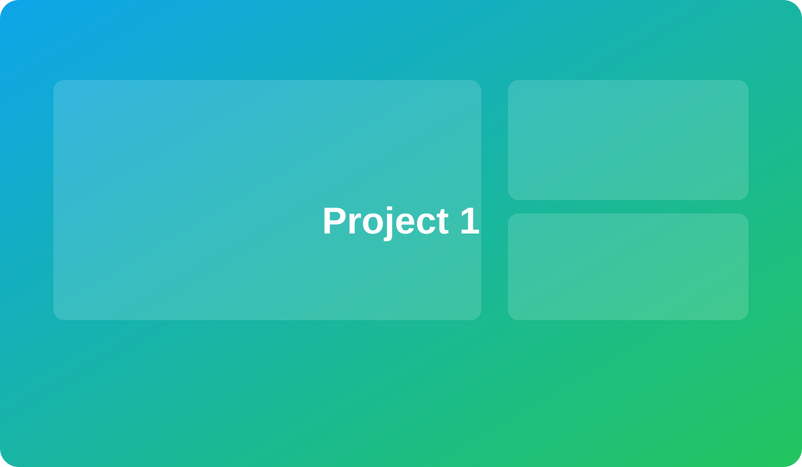
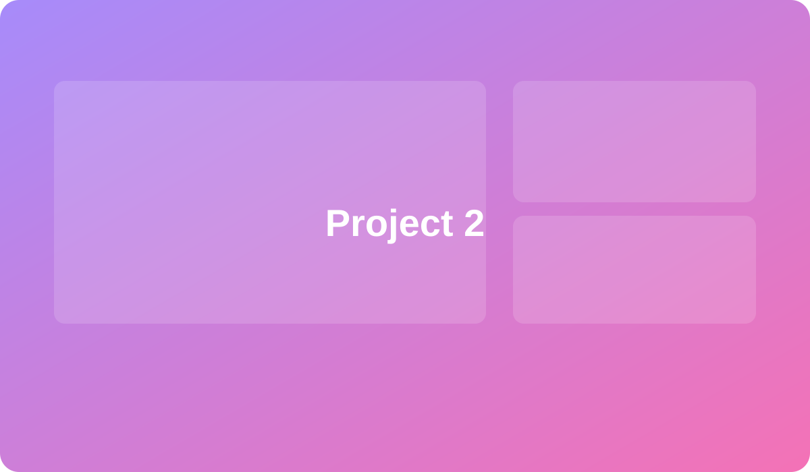

CNC Drive Assembly — Redacted Drawing
Engineering drawing showing the mechanical layout of a ball screw assembly for a CNC mill.
I'm Jonathan Mendoza, a Mechanical Engineer specializing in CNC machine systems, retrofit kits, and engineering automation. I focus on improving product reliability, streamlining assembly workflows, and developing practical tooling—such as SolidWorks macros—to eliminate repetitive engineering tasks.
Engineering work focused on DFM, non-conformance management, commissioning, rapid prototying, tooling, and documentation.

Engineering drawing showing the mechanical layout of a ball screw assembly for a CNC mill.

Performed a structured engineering investigation into position‑dependent coolant leakage on a CNC turning center. Identified root cause through teardown and inspection, coordinated corrective action, and verified resolution through full system testing.
SolidWorks, Inventor, AutoCAD, DraftSight — production drawings, assemblies, GD&T (ASME Y14.5), and tolerance definition.
CNC systems, retrofit kits, machining workflows, DFM/DFA, prototyping, and production release support.
SolidWorks API (VBA macros), Python, MATLAB, Java — focused on workflow automation and productivity tooling.
Engineering Change Requests (ECR), New Product Introduction (NPI), BOM management, documentation, and cross‑functional release workflows.
3D printing, rapid prototyping, data acquisition, inspection, and validation of mechanical systems.
English (Native), Spanish (Fluent), Portuguese (Fluent)
Manage product lifecycles through Engineering Change Requests (ECR) and New Product Introductions (NPI). Design mechanical parts and assemblies for CNC machines using SolidWorks.
Develop detailed drawings for manufacturing, create and maintain engineering BOMs, and collaborate with electrical teams on cable routing and system integration. Work with suppliers on CAD requests, inspection, and quality assurance.
Designed shipping package assemblies for electric vehicle systems using SolidWorks. Created repeatable build drawings and organized BOM structures to support production manufacturing.
California State University, Los Angeles
Minor in Computer Science
2015 – 2020
Engineer in Training (EIT) — NCEES (2020)
Certified SolidWorks Professional (CSWP) — Dassault Systèmes (2020)
Open to mechanical design, automation, and tooling projects.